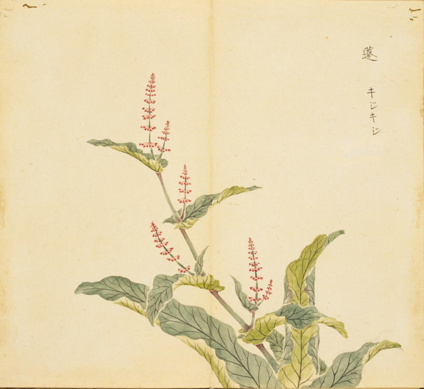
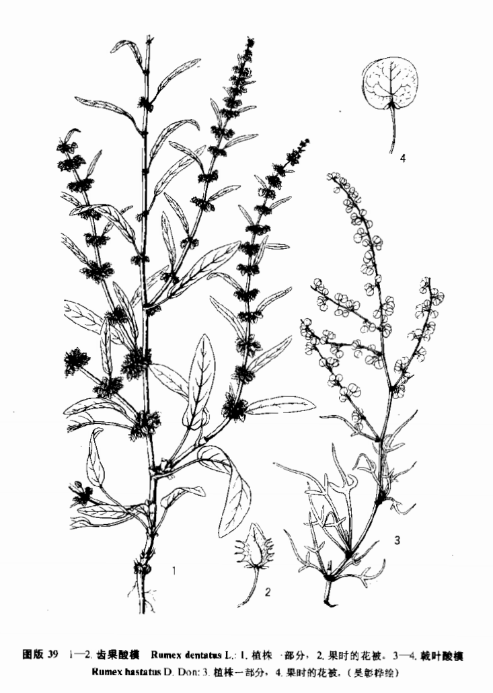

出现篇目
古代记载 《毛诗故训传》
蓫，恶菜也。笺云：蓫，牛蘈也，亦仲春时生，可采也。（《毛传》注《我行其野》）
《毛诗草木鸟兽虫鱼疏》
蓫，牛灊，扬州人谓之羊蹄，似芦菔而茎赤，可瀹为茹，滑而美也，多啖令人下气。幽州人谓之蓫。
《毛诗正义》
疏笺“蓫，牛颓”。
《诗集传》
蓫、牛蘈、惡菜也。今人謂之羊蹄菜。（《诗集传》集注《我行其野》）
当代记载 《中国植物志》
疑为齿果酸模（ Rumex dentatus L.），蓼科酸模属。一年生草本。茎直立，高30-70厘米，自基部分枝，枝斜上，具浅沟槽。茎下部叶长圆形或长椭圆形。花期5-6月，果期6-7月。产华北、西北、华东、华中、四川、贵州及云南。生沟边湿地、山坡路旁，海拔30-2500米。尼泊尔、印度、阿富汗、哈萨克斯坦及欧洲东南部也有。

<细井徇>

<中国植物志>